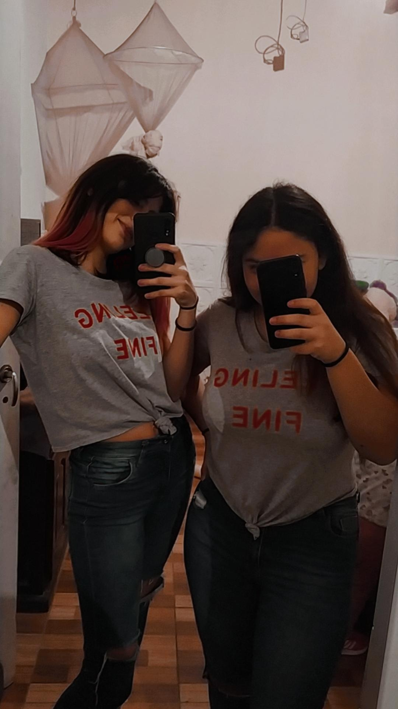

Entrevista a mi prima
¿Cómo te llamas?
Ariadna.
¿Cuántos años tenés?
17.
¿Tenés hermanos/as?
Sí, una hermana menor y un hermano mayor.
¿Cuándo es tu cumpleaños?
Cumplo 18 el 27 de Octubre.
¿Qué carrera tenés pensada estudiar cuando termines la escuela?
Quiero ser nutricionista, en la Universidad de La Matanza.

 Instagram
Instagram